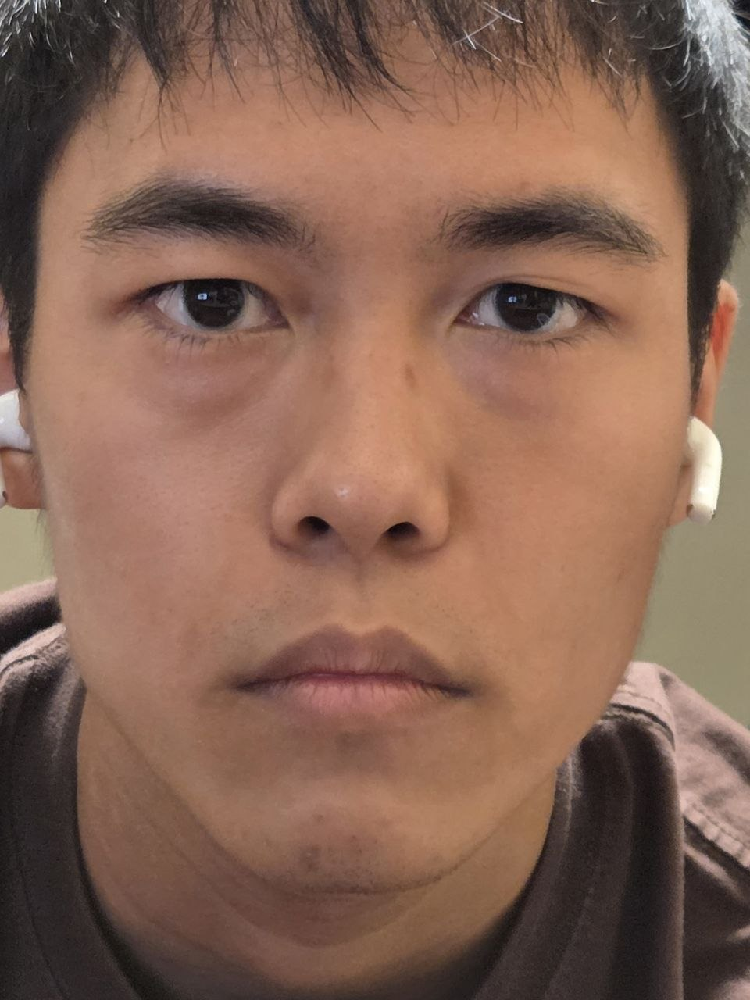
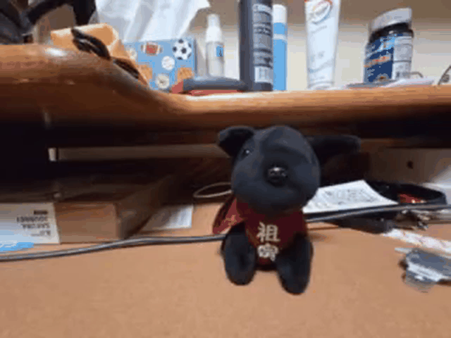
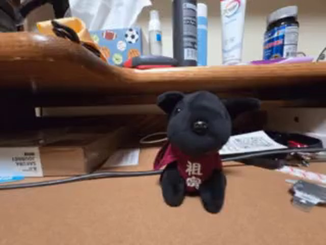
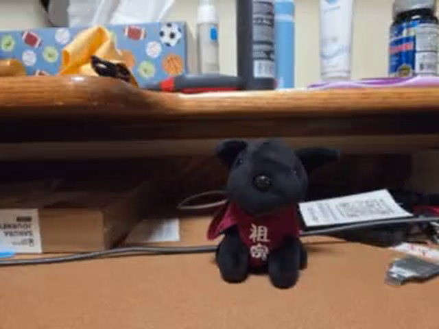
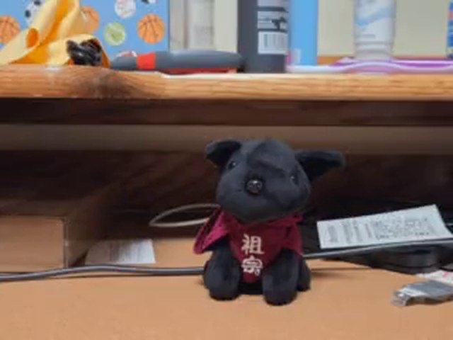
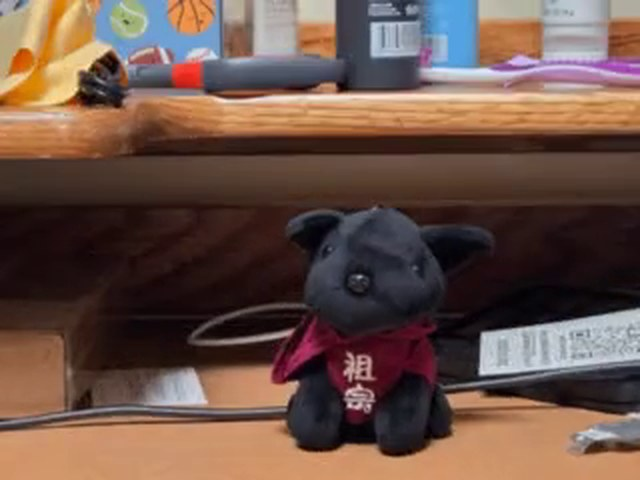

Selfie: the wrong way vs. the right way
I first photographed my face from very close at 1×. Then I stepped back and used 4× zoom, keeping my face approximately the same size in the frame.


In the close image, the camera is only a short distance from my face. A few centimeters of real depth—such as the nose sitting in front of the ears—becomes a large fraction of the camera-to-subject distance. Because projected size changes inversely with depth, the closest features become disproportionately large and the face looks more stretched.
With the 4× image, I moved roughly four times farther away and zoomed in to restore nearly the same framing. From that farther viewpoint, the relative distance from the camera to the nose, cheeks, and ears is much more similar, so their projected proportions are closer together and the portrait looks flatter and more natural.
Camera-note estimate: the Galaxy S25+ 1× main camera is about 24 mm full-frame equivalent. A 4× field of view is therefore about 96 mm equivalent framing. The phone has a 3× optical telephoto lens, so 4× also includes a digital crop. The uploaded images do not contain usable EXIF distance metadata, so the centimeter values are approximate; keeping the face the same size implies the 4× shot was about four times farther away.
Architectural perspective compression
I reversed the portrait experiment: first I photographed the building from farther away with zoom, then walked toward it and photographed it again without zoom while keeping the building roughly the same size in the frame.


In the far, zoomed image, the distances from the camera to the near and far parts of the building are relatively similar. Their magnifications are therefore similar too, which reduces the visual change in scale with depth. The result is the familiar “telephoto compression” look.
After walking closer, the near side of the building becomes much closer to the camera than the farther side. That larger depth ratio makes the near geometry expand relative to the far geometry, exaggerating receding lines and making the scene feel deeper. Zoom mainly lets both versions keep similar overall framing; the viewpoint produces the perspective change.
The dolly zoom
For the final experiment, I changed camera distance and zoom together. The stuffed animal stays roughly the same size while the surrounding scene visibly changes scale and depth.

Why the background moves while the subject stays put
A dolly zoom combines two effects that normally happen together but can be made to cancel for one chosen subject. Moving the camera changes perspective: the relative apparent sizes of the subject and background change because they lie at different depths.
Zooming changes magnification. By adjusting zoom in the opposite direction while moving, I compensate for the change in the stuffed animal's size. Its framing stays approximately constant, but the background cannot be kept constant at the same time, so it appears to stretch or compress around the subject.



